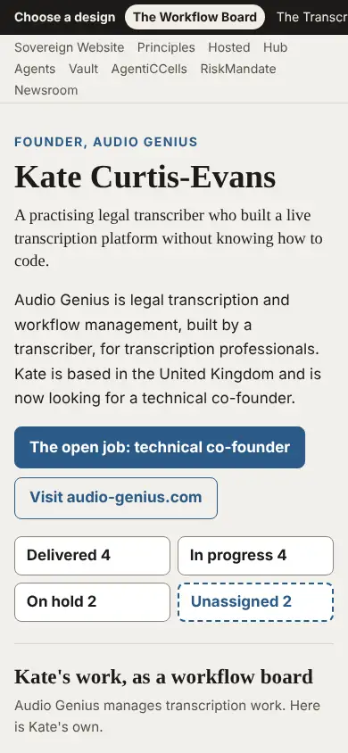
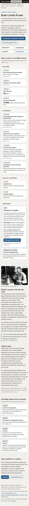
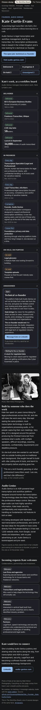
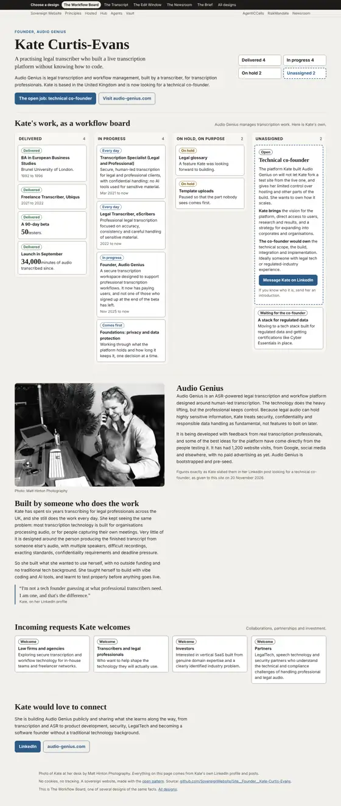
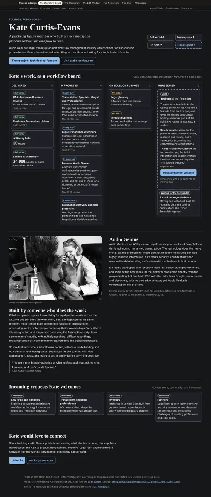

Synthetic users: Kate Curtis-Evans, round 5
Site: https://kate-curtis-evans.founder.sovereignweb.site/ (home: The Workflow Board). Commit: dcf8a5f. Run: 20 November 2026, about 15:25 UTC, by design.b. Look score: 3.8 (4, 3, 4, 4, 4). design.b signed off at 4 on this run; Dinis Cruz then judged the site bland, and the sign-off was withdrawn (round 6).
Each persona is a separate agent given only what a visitor gets: the first phone screen (390 x 844), full-page screenshots at 390 and 1366 px in light and dark, the design chooser opened (from round 7 on), and the page's visible text. It is not given the guidelines or design.b's findings. Method: Synthetic users. These are simulations: they inform a rating, and never replace the measured checks or a real person.
Verdicts
Phone visitor in a hurry: 4 of 5
Would tap "The open job: technical co-founder". The board idea is "clever but a bit odd on a phone, where it is one very long scroll"; the top bars are "confusing noise"; "Unassigned" unclear at first.
Small business owner: 3 of 5
"Clean and professional, but a bit plain." The top menu is crowded; the board slightly gimmicky; very long on a phone. Wanted a bigger, warmer photo near the top.
Low-vision reader: 4 of 5
Buttons big and clear. The four-column board is cramped on desktop; grey captions, tiny status pills and the faint footer are hard to read; "Unassigned" is odd jargon.
Design critic: 4 of 5
Calm serif and sans pairing, "it feels personal". Tiny grey captions and the cramped top strip; "50testers" has a missing space. Raise the board's small text.
Technical co-founder candidate: 4 of 5
Concrete numbers and honest limits build trust; the platform is vibe-coded and no stack is named. Her CV among project cards is odd. Wanted a short "what the build is and what's at stake" panel.
Agreed by three or more
- "Unassigned" reads as jargon (four of five). 2. The bars above the content puzzle. 3. Small pill and caption text. 4. The phone page is long. Lesson: all five could say what the site is and what to do next, and four gave it a 4, yet Dinis found it bland. The look question now asks "would you show this to a friend, and did anything make you say wow?"
What the personas saw




